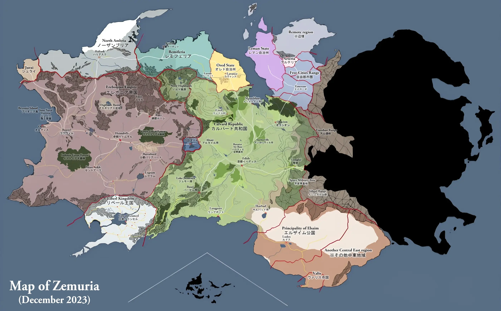

Lore Timeline
The timeline presented below is based on information sourced from in-game scripts and the Kiseki Wiki.
Best viewed on desktop; small screens may require horizontal scrolling.
Liberl Arc
Crossbell Arc
Erebonia Arc
Calvard Arc
Interactive Map
Map image sourced from the Kiseki Wiki.
Hover over a region to highlight it; click to see information about that region.
Best viewed on desktop; functionality on small screens is not guaranteed.
